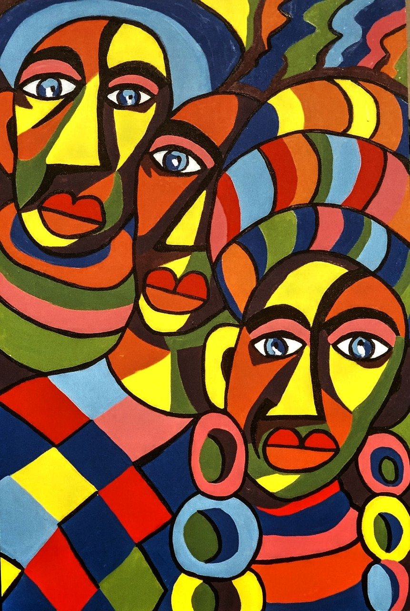
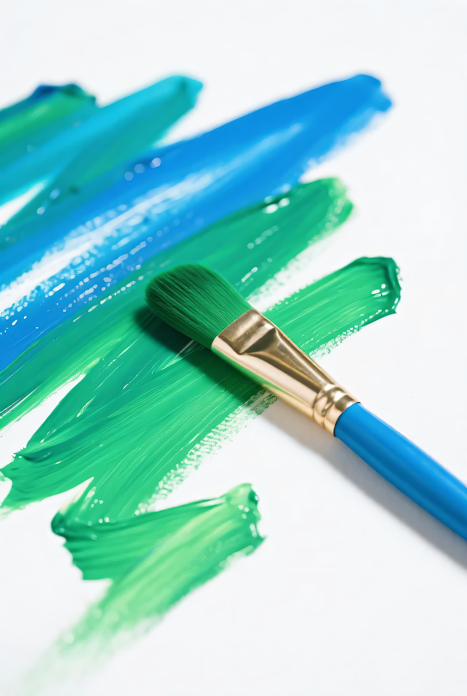
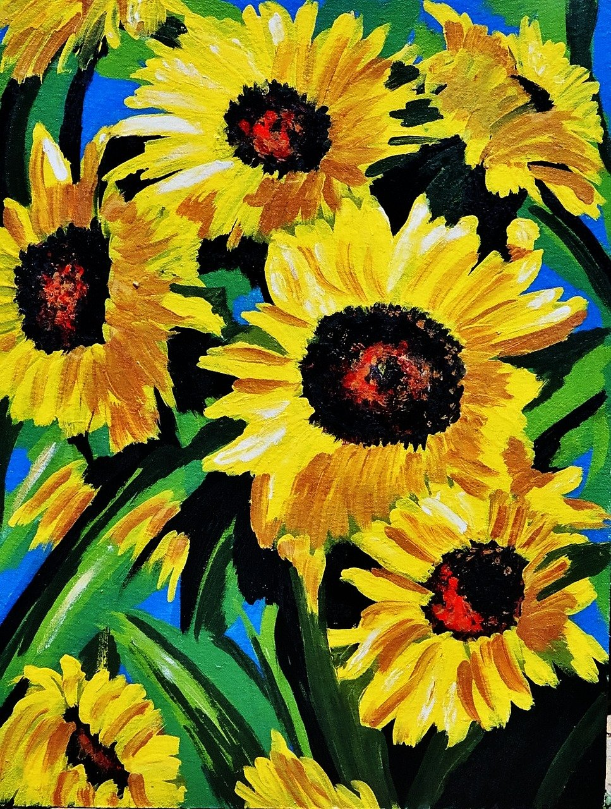
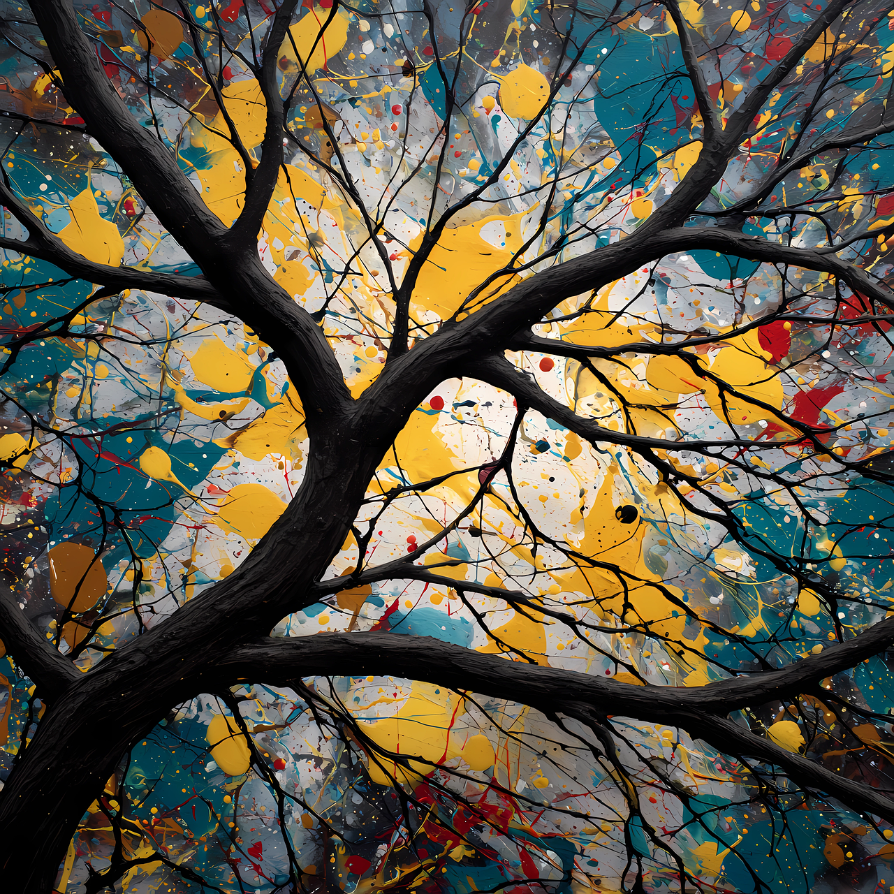

Seeing the World Through Art
Visual arts include all the art forms we can see, such as painting, drawing, sculpture, photography, and design. Artists use color, texture, and shape to express emotions or ideas. Famous painters like Frida Kahlo and Vincent van Gogh created works that still inspire people today. Visual art can be realistic or abstract. It invites viewers to interpret what they see in their own way. Art is not about being perfect—it’s about expressing something unique that words cannot always describe.



